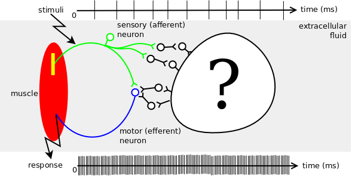
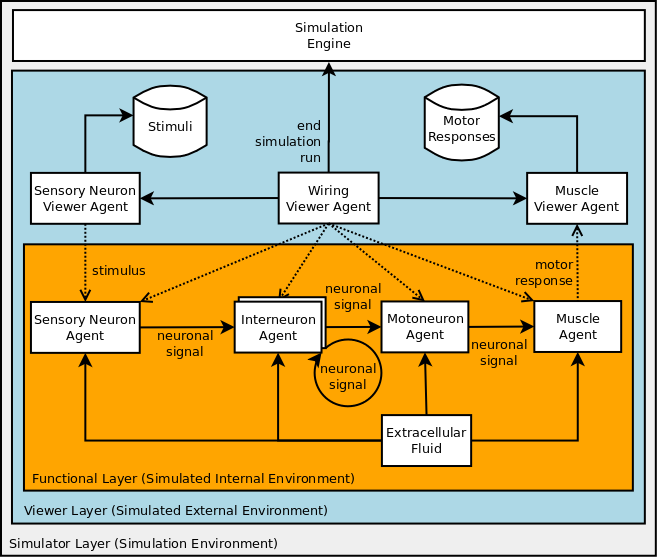

Short Model Description |
Short Model Description
Content
A single motor unit is a single alpha-motor neuron and all of the corresponding muscle fibers it innervates; all of these fibers will be of the same type (either fast twitch or slow twitch). When a single motor unit is activated (via a sensory neuron), all of its fibers contract. Groups of motor units often work together to coordinate the contractions of a single muscle; all of the motor units that subserve a single muscle are considered a motor unit pool. However, motor unit pools are beyond the scope of this simulation model.

Figure 2.1: The realistic model for single motor unit circuit
Figure 2.1 represents a single motor unit model. It is composed of a sensory (afferent) neuron, a motor neuron, lots of interneurons (black ones), a muscle and the extracellular fluid that surronds the spaces around these neurons and the muscle. As can be seen from this figure, the sensory neuron and the motoneuron makes only one synapse (monosynaptic). However, the network of interneurons is unknown (see question mark - ?).

Figure 2.2: Simulation model for Single Motor Unit
There are broadly two categories of agents: functional agents and viewer agents.
Functional agents represent physical elements (neurons and muscles). Thus, each neuron and the muscle in the realistic model are treated as excitable cells and modeled as functional agents. In this sense, functional agents are: Sensory Neuron Agent, Inter Neuron Agent, Motor Neuron Agent and Muscle Agent (see Figure 2.2). Axons are represented as links between excitable cells. Synapses are not modeled explicitly, instead for each synapse an axon is created between agents and the transfer of neuronal signals are modelled as axonal delays for each axon.
Viewer agents enable interactions between functional agents and the system user by extracting comprehensible data (for analysis and display purposes) and injecting experimental data and constraints specified by this user. Viewer agents are in our simulation model are: Sensory Neuron Viewer Agent, Wiring Viewer Agent and Muscle Viewer Agent.
The global aspects of the simulated environment are treated like a global environmental agent: Extracellular Fluid. Since Extracellular Fluid is the fluid present in blood and in the spaces surrounding cells, it is naturally the physical environment for all above physical elements. The global aspects of the simulation environment, on the other hand, are treated as Simulation Engine.
One important assumption is that all interneurons have the same axonal delay and non of them is going up to cortex.
One aspect that was intentionally omitted is that neurons do not have learning capabilities. They are only responsible for propagating incoming spikes to their post-synaptic neurons. We also omit synapses in this model. Instead we use axons and axonal delays to represent the temporal relation between neurons. Each axon represent a synapse and more than one synapse is represented as more than one axon.
Functionality
One of the capabilities of the model is simulating a monosynaptic reflex pathway that generates an H-Reflex. In this sense, the axonal delay of Sensory Neuron is tuned in response to feedbacks sent by Wiring Viewer.
Another capability will be constructing a biological neural network from scratch that generates an excitation after the H-Reflex. In this sense, a neural pathway will be created using self-organizing dynamics. The characteristics of this pathway will be provided by Wiring Viewer based on experimental data. However, the implementation of this capability is not finished yet.
The model can be used by just providing some single motor unit experimental data. These include:
- (1) stimulation policy for sensory neuron,
- (2) experimental data to detect motoneuron discharge frequency (without external stimuli), and
- (3) experimental motor response data from the muscle of the subject in response to external stimuli.
(c) 2010 Önder Gürcan | Contact me